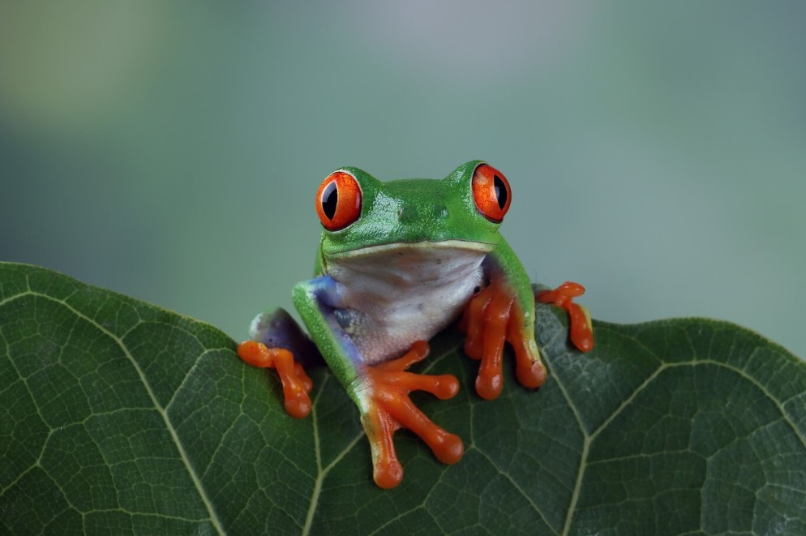

Frog Knowledge
What is a frog? Well simply put, a frog is a small semi-aquatic amphibian; more specifically cold-blooded vertebrates. Frogs are also extremely diverse as they live in almost every continent on Earth. Being an amphibian, frogs can live on land and in water thus expanding there possibilities of locations to call home.
Kingdom: Animalia
Class: Amphibia
Domain: Eukaryota
Phylum: Chordata
What is an amphibian?
An amphibian is a creature that can live in both water and land. However, when considering their reproductive needs. An amphibian can only produce their eggs in or at least near the water. Additionally, a change in their structure (metamorphosis) proceeds at a point in their life, typically changing them from an aquatic larvae to an adult with legs and functional lungs
Frog Vs. Toad
Just because they look the same does not mean they actually are. Despite being both amphibians, they are not in the same family. Their homes tend to be different as well. As noted, frogs vary in their habitat where as a toad has a more terrestrial desire. Additionally, there are noticeable physical differences between the two. A frogs have smooth and hydrated skin, adn long legs. The toad on the other hand has dry and even warty skin, which is accompined with shorter limbs.
Fun Fact #1
There are approximately 180 species of poisonous frog that exist throughout the world today.
Fun Fact #2
Frogs hold many myths throughout many cultures and are often associated with fertility. This common myth can be attributed to how many eggs they produce and other social factors within the referring culture.
Fun Fact #3
Due to the positioning of frogs eyes, they are able to see about 180 degrees.